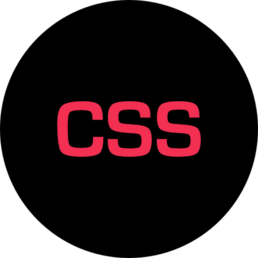
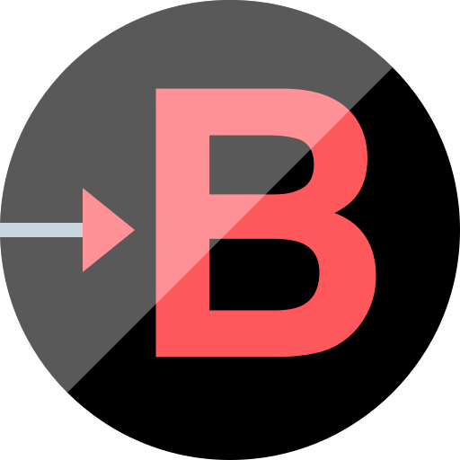
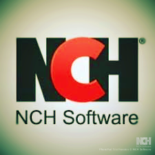

Courses & Practical Learning
Programming with Python
Python programming fundamentals and practical projects
Database Design & SQL
SQL skills and database design
Networking Fundamentals
Networking skills and configuration
Linux & System Administration
Linux command line and system basics
Web Development
Building responsive websites
ICT Infrastructure & Cloud
ICT infrastructure and cloud fundamentals



Projects
EV Charging Optimizer
Python-based EV charging optimization project.
Python • Streamlit • Excel
Music Gigs Database
Relational database design and SQL project.
SQL • MySQL • HeidiSQL
Web Development Projects
Responsive and multilingual web development projects.
HTML • CSS • Bootstrap • JavaScript • GitHub